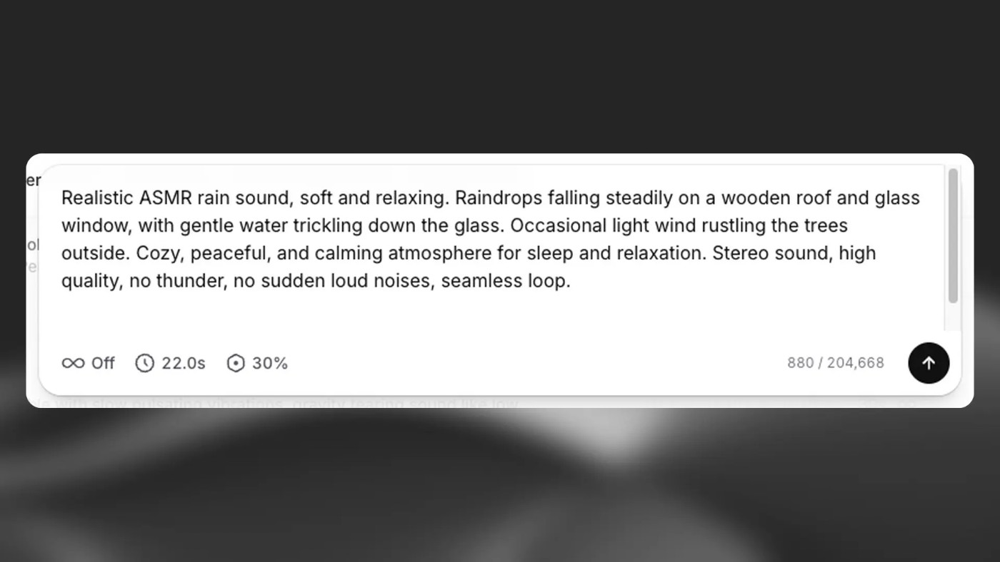

先描述完整场景，再听每个声音
一个体育片段可能要人群欢呼、球落地、再出现嘘声，单独找素材还得安排先后和混音。SFX v3把这种多声音提示作为主要更新，官方十月二十九日发布、三十日修改文章，不能把修订日期当首发。它也强化音乐和人声混合的音效。对于剪辑者，省下的可能是搜寻初始候选的环节，最终仍要听清场景里是否真的包含每个动作，以及前景和背景是否互相遮盖。这里依据厂商功能说明与演示，没有把生成样例当作固定成功率，也没有把音效模型说成完整电影声音制作流程。
ElevenLabs SFX v3 · 产品 · 官方更新

一个体育片段可能要人群欢呼、球落地、再出现嘘声，单独找素材还得安排先后和混音。SFX v3把这种多声音提示作为主要更新，官方十月二十九日发布、三十日修改文章，不能把修订日期当首发。它也强化音乐和人声混合的音效。对于剪辑者，省下的可能是搜寻初始候选的环节，最终仍要听清场景里是否真的包含每个动作，以及前景和背景是否互相遮盖。这里依据厂商功能说明与演示，没有把生成样例当作固定成功率，也没有把音效模型说成完整电影声音制作流程。
产品指南要求从Playground进入Sound Effects，输入提示后设置时长、循环及提示影响度。网页一次生成四个候选，历史记录提供下载和收藏；修改文本或设置后可以重生成。自动时长适合先探索素材，指定时长方便贴合片段，但都不自动保证关键动作正好对齐画面。指南提供MP3和WAV下载，循环声效用于持续背景。设计上，这保留了选择而不是直接覆盖成片的步骤：创作者可比较不同版本，再决定哪一段放入时间线。如果需要某个声响单独调音量，分别生成再混合仍是有效替代办法。
模型目录给出的标识是eleven_text_to_sound_v3，沿用Sound Effects接口，旧版v2仍是默认值。文档特别注明有限开放及地区差异，未获访问的账户会收到Unknown model，因此“API已经发布”不能直接等同自己的密钥已经可用。能力页把单次长度限定为零点一到三十秒，并说明循环通过反复播放延长背景，不是无限长的一次生成。它还承认要求精确重复次数未必成功。对已有应用，较稳妥的切换是保留原模型路径、对同一批实际提示比较输出，而不是只因为请求参数未变就视作无风险替换。
费用随网站或API入口、长度和输出设置而变，不能把一条免费体验宣传直接套到所有新版请求。更重要的是商业用途与分发范围：ElevenCreative音效条款允许在符合套餐的情况下，把输出结合到影片、游戏、广告或其他作品；不能据此单独出售音频文件、采样包或建立可转售声音库。社区分享是另外一项控制，开启后已有许可不会因后来关闭便全部消失。对一般创作者，生成的片段应作为工程中的可替换素材保存，同时记录使用模型与提示。新模型能缩短找声音的路径，精确节拍、独立声部和发行前试听仍留给制作流程。